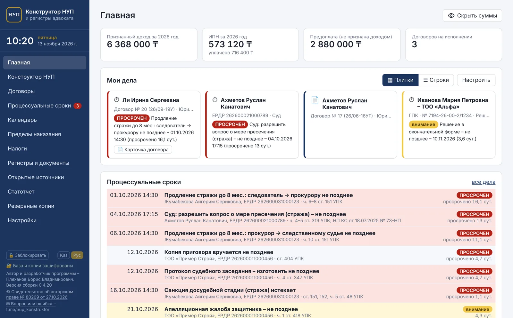

Қазақстан Республикасының жеке практикамен айналысатын адвокаттарына арналған тегін бағдарлама: салықтық есеп саясаты, шарттар мен кірістерді есепке алу, салықтар, тізілімдер, іс жүргізу мерзімдері, күнтізбе.
Windows 10/11 · macOS 12 және жаңарақ (Apple M1–M4 және Intel) · орыс және қазақ тілдеріндегі интерфейс
Сұрақтарға жауап бойынша адвокаттың салықтық есеп саясаты, Word құжаты, редакциялар.
Шарттар тізілімі, түсімдер, хабарламалар, кірісті тану; сенім білдірушінің телефоны, поштасы және өкілдері.
ЖТС және әлеуметтік төлемдерді ай сайын есептеу, төлем белгілері, салық күнтізбесі.
Word форматындағы тізілімдер мен актілер; статистикалық есеп.
Қылмыстық істер бойынша мерзімдер; телефон күнтізбесіне жүктеу.
Барлық деректер тек сіздің компьютеріңізде сақталады; базаны және сақтық көшірмелерді шифрлау.

Орнатқышты іске қосыңыз. «Windows жүйесі компьютеріңізді қорғады» деген көк терезе шықса, «Толығырақ» → «Бәрібір орындау» батырмасын басыңыз.
Жүктелген ZIP-файлды ашыңыз, «Конструктор НУП» бағдарламасын «Бағдарламалар» қалтасына сүйреңіз. Бағдарлама Apple қолтаңбасымен қол қойылған және расталған.
Жаңартуларды бағдарлама өзі тексереді. Есептеулер мен құжат мәтіндері көмекші сипатта болады: оларды қолданыстағы заңнама мен іс материалдары бойынша тексеріңіз.